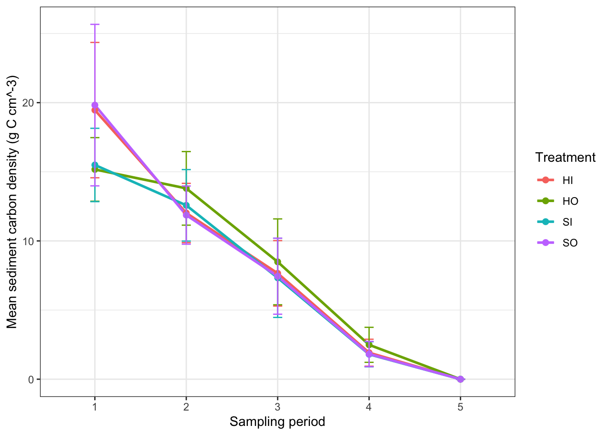
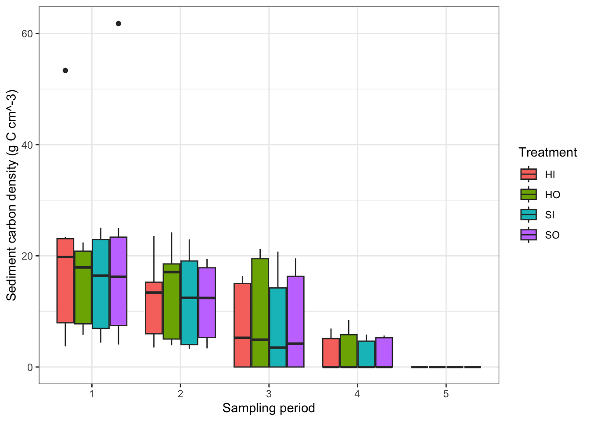
Advisor: Dr. Guilherme Corte
Committee Members: Dr. John Lefcheck, Dr. Kristin Wilson Grimes, and Dr. Lincoln Critchley
Seagrass meadows are foundation coastal habitats that support biodiversity, fisheries, shoreline protection, and water quality, while also acting as important blue carbon sinks by trapping and storing organic carbon in their sediments over long timescales (Barbier et al., 2011; Cullen-Unsworth & Unsworth, 2013; Fourqurean et al., 2012; Duarte et al., 2013; Macreadie et al., 2015). Although they cover only ~0.1–0.2% of the global seafloor, seagrasses contribute disproportionately to global oceanic carbon burial due to efficient trapping of fine sediments and the accumulation of organic matter under largely anoxic conditions (Duarte et al., 2005, 2013; McLeod et al., 2011; Enríquez et al., 1993). However, this carbon is not permanently secure: physical, biological, and anthropogenic disturbances can erode sediments, remobilize centuries of stored carbon, and reduce the long-term carbon storage capacity of meadows (Boudouresque et al., 2009; Krause-Jensen & Duarte, 2016; Serrano et al., 2016; Vaughn et al., 2024).
In the Caribbean, native species like Thalassia testudinum have historically provided extensive habitat and carbon storage, while the invasive Halophila stipulacea is rapidly expanding and reshaping seagrass communities in the U.S. Virgin Islands and across the wider region (Willette & Ambrose, 2009; Willette et al., 2014; Van Tussenbroek et al., 2016; Winters et al., 2020). H. stipulacea can form dense mats that stabilize sediments and, under some conditions, store carbon at levels comparable to native species, but its shallow root system, altered canopy structure, and tendency to form monocultures may change how carbon is stored and released, especially following disturbance (Jensen, 2018; Apostolaki et al., 2019; Brenner et al., 2024; Vaughn et al., 2024). These changes raise questions about whether H. stipulacea functions primarily as a short-term sediment stabilizer or as a robust long-term carbon sink in dynamic, hurricane-impacted environments (Duarte et al., 2013; Macreadie et al., 2015).
This thesis investigates how physical disturbance affects sediment carbon storage and recovery in H. stipulacea meadows across bays in St. Thomas, U.S. Virgin Islands. By linking disturbance and recolonization dynamics with meadow structure and sediment properties (including grain size and organic carbon content), this work addresses key knowledge gaps about when H. stipulacea functions as a carbon sink versus a carbon source and how its continued spread may influence blue-carbon resilience and management in Caribbean seagrass ecosystems (Lavery et al., 2013; Rotini et al., 2017; Smulders et al., 2017; Serrano et al., 2016; Vaughn et al., 2024).
This study was conducted in St. Thomas, U.S. Virgin Islands, an unincorporated territory of the United States in the eastern Caribbean. Sites were selected through preliminary snorkel surveys conducted between May and July of 2025. Snorkelers were deployed at three locations, Fortuna Bay (FB), Lindbergh Bay (LB), and Brewers Bay (BB), St. Thomas, USVI, to verify that each site met the basic requirements for this study. All bays contained the required H. stipulacea beds and adjacent unvegetated sandy substrate, providing natural control habitats. These sites are located along the southwestern coast of St. Thomas. Fortuna Bay, the westernmost site, is unprotected from prevailing eastern winds and tidal currents. Brewers Bay is a highly protected inlet, sheltered from wind and tidal flow, situated between Fortuna Bay and Lindbergh Bay. In contrast, Lindbergh Bay is semi-protected and faces south.
All fieldwork was conducted under permit from the U.S. Virgin Islands Department of Planning and Natural Resources (#DFW25023T).
A team of divers conducted sediment core sampling and biological monitoring at five time points, designed to capture the rapid loss and remineralization of carbon following disturbance. Pre-disturbance sampling occurred in May 2025, followed by four post-disturbance events: one month (June 2025) to capture immediate carbon loss, two months (July 2025) and four months (September 2025) to capture intermediate sediment stabilization, and six months (November 2025) to assess longer-term recovery or equilibrium. These intervals were selected to represent distinct stages of post-disturbance carbon dynamics, consistent with seagrass disturbance and blue-carbon studies documenting similar response timescales (Willette et al., 2020). These sampling intervals structured the sampling design, which combined sediment core collection and quadrat-based monitoring.
In May 2025, fifteen 0.25 m² quadrats were established in H. stipulacea and adjacent unvegetated sand at each site (BB, FB, LB) using rebar stakes (quadrats 1–15 per habitat). Locations were selected haphazardly based on preliminary GPS surveys, placed ≥2 m from meadow edges and other quadrats, and georeferenced with a Garmin GPSMAP 67i. At each sampling, quadrats were photographed from 1 m height with a photo-quadrat frame and an OM SYSTEM Tough TG-7 camera. Images were analyzed in CoralNet using 20–240 random points per image to estimate percent cover, and visual cover estimates (0–100%) were recorded for comparison. Five blades per quadrat were measured for shoot height, and shoot density was quantified by counting all H. stipulacea within a 10 × 10 cm sub-quadrat.
At each site, six sediment cores were collected from quadrats 13–15 in each habitat (three inside and three 1 m outside each quadrat) using 20 cm long, 7.6 cm diameter polycarbonate corers inserted to ~20 cm or refusal. Cores were capped, transported upright on ice to the UVI Environmental Analysis Laboratory, photographed, decanted of excess water, and frozen upright. After initial core collection, the remaining H. stipulacea quadrats were disturbed by hand- and shovel-removal of all biomass, and a rebar stake was drawn through both vegetated and sand quadrats to standardize surface disturbance. During each subsequent sampling period, three new quadrats (from quadrats 1–12) per habitat were selected, twelve additional cores were collected, and quadrats were re-photographed, yielding a total of 180 sediment cores across all sites and sampling events.
Cores were partially thawed, extruded, split lengthwise (half archived, half processed; after Howard et al., 2014), and the working half was sectioned into 0–5 cm and 5–10 cm intervals. Each interval was split for grain-size and LOI analysis. Wet mass and volume were recorded, then samples were dried at 60°C to constant weight to calculate dry bulk density.
(DBD = dry mass / original sample volume).
Large fragments were removed, and sediments were homogenized using a SPEX 8000M Mixer/Mill.
Percent organic matter (%OM) was determined using the loss-on-ignition (LOI) method.
%OM = (dry mass before combustion -dry mass post combustion) / (dry mass before combustion) * 100
Percent organic carbon (%OC) was estimated from %OM using a region and species specific calibration curve.
%OC = -0.63 + 0.4 * %OM.
Sediment carbon density (SCD) was then calculated for each subsample.
SCD = DBD * (%OC / 100)
Average SCD by Treatment over Time
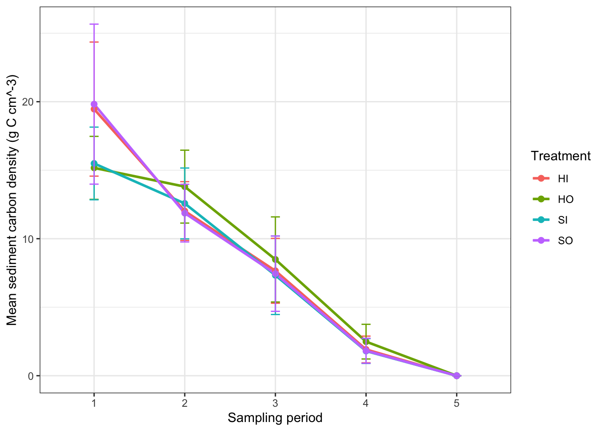
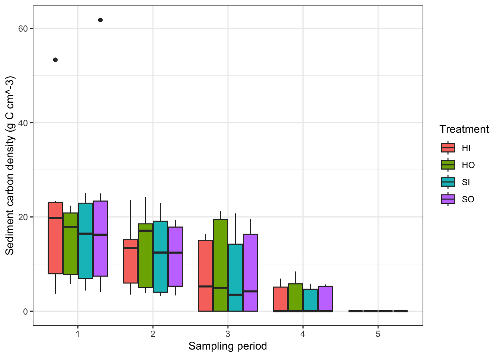
H. stipulacea percent cover over time
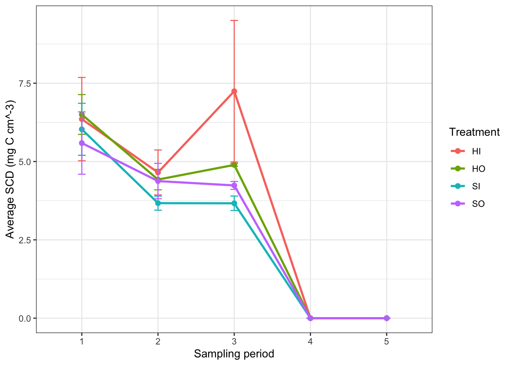
Sand percent cover over time
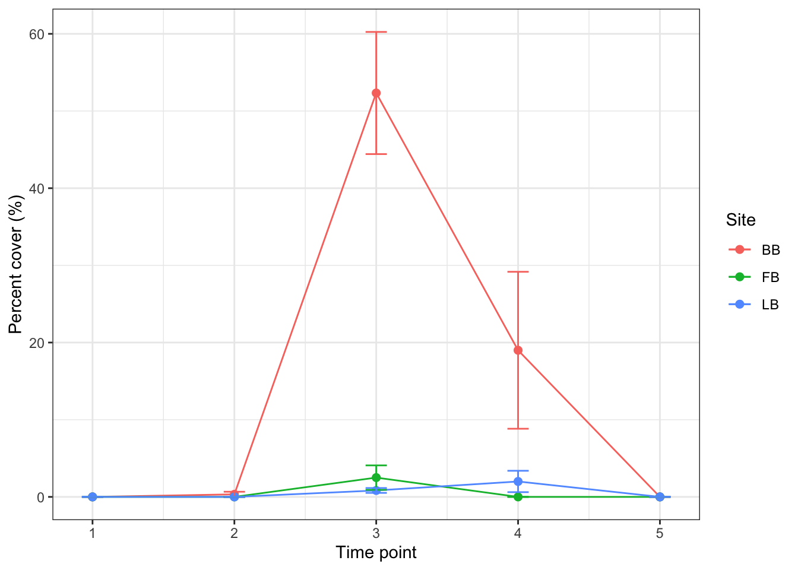
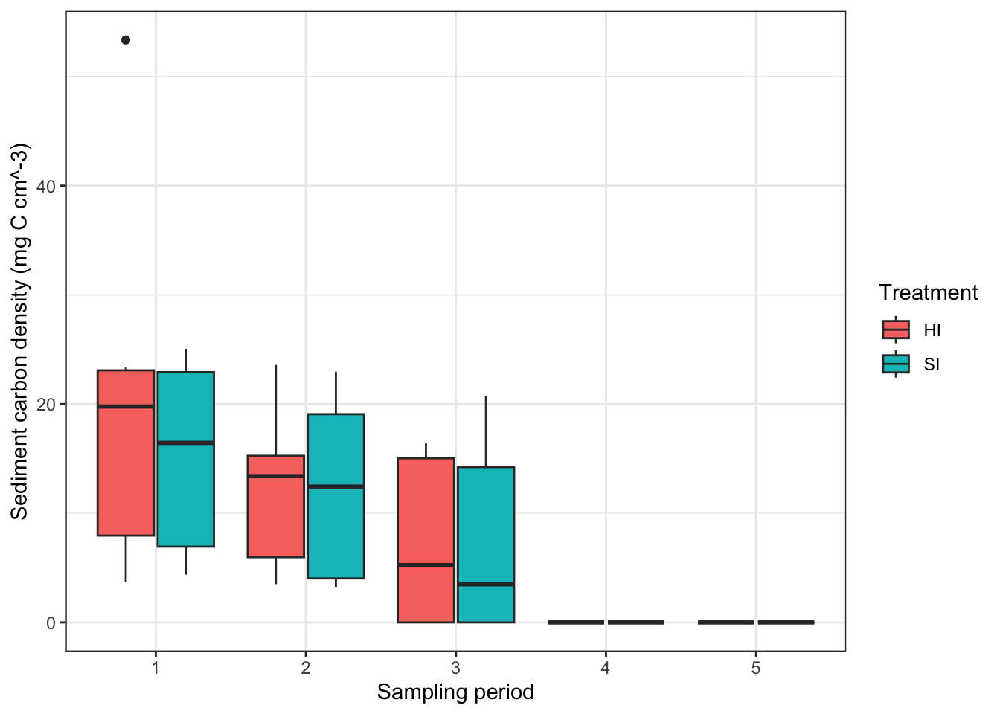
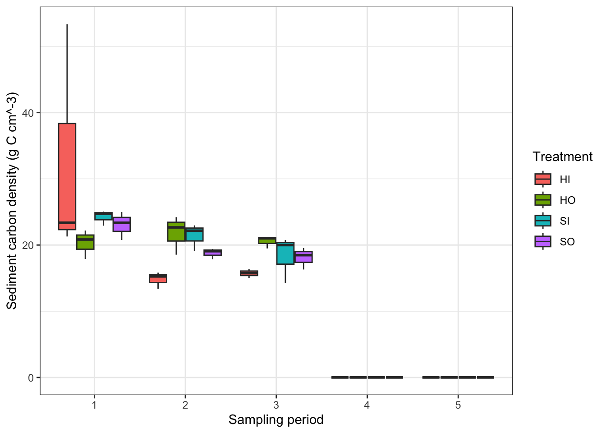
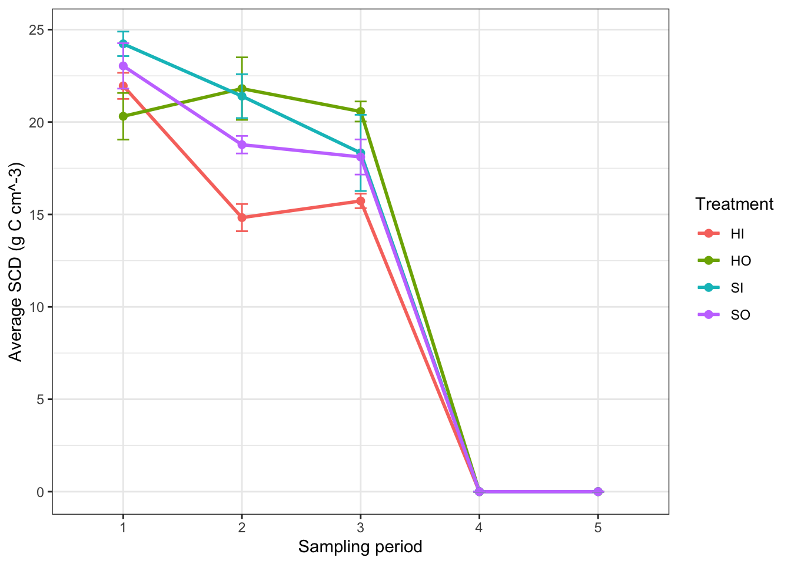
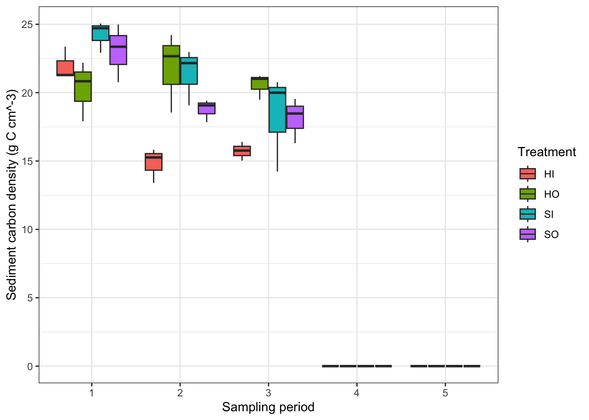
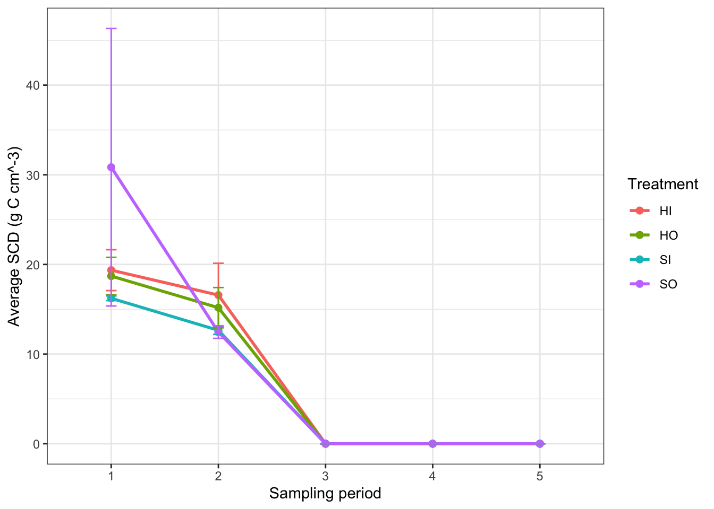
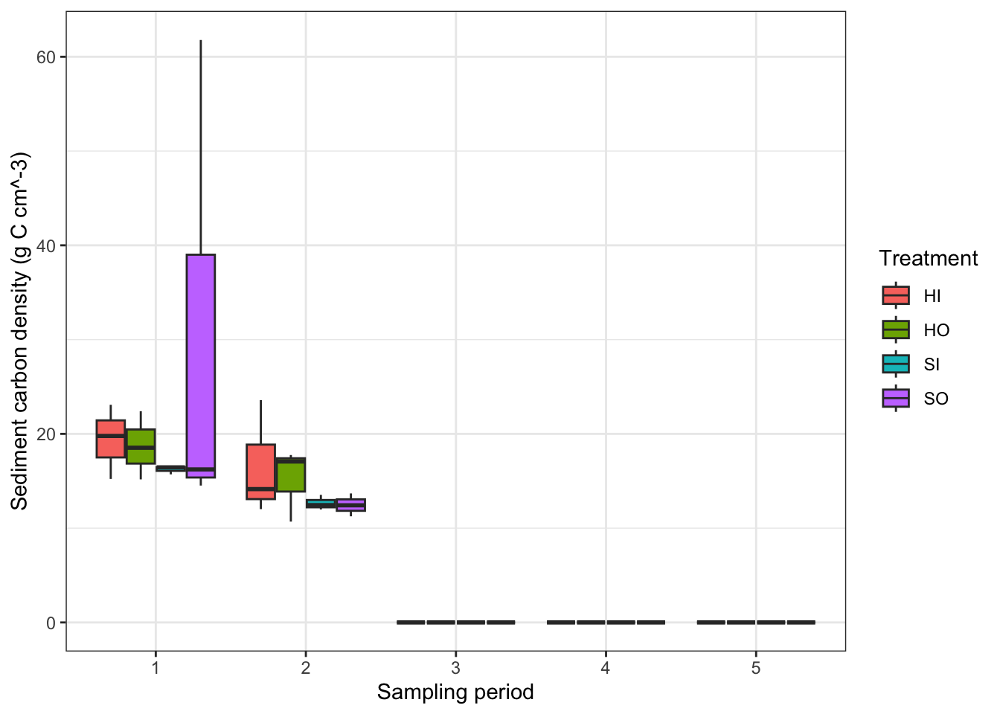